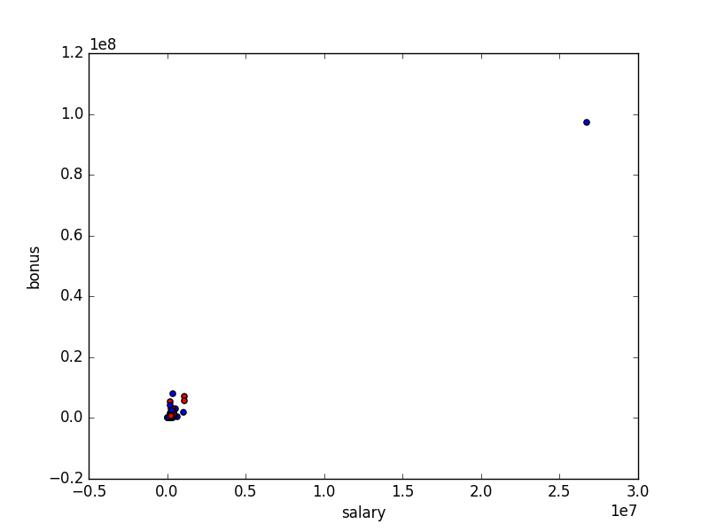
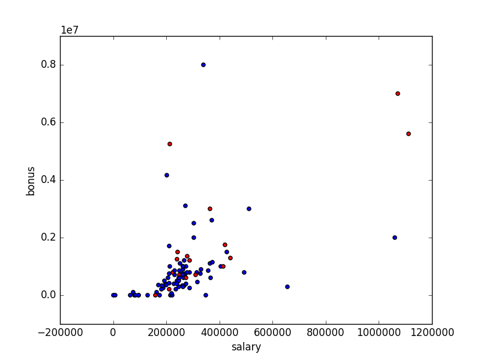

Overview
The purpose / goal for this project is to use the financial and email data available to us from the Enron Fraud case and determine who are the people of interest and who warrants further investigation. Whilst the data is historic and the people have been already identifed publicly, this project is using Machine Learning to identify these people through the use of data.
Data Analysis
| Description |
Result |
|
Number of people
|
146
|
|
Number of People of Interest
|
18
|
|
Number of Features / Variables
|
21
|
Cleanliness / Completness of data
The table below shows that the financial / payment data is missing for about 14.38% of people in the dataset, however there is 0% missing for the people of interest.
| Description |
Result |
|
Percentage of people with no payment data
|
14.4%
|
|
Percentage of POI with no payment data
|
0.0%
|
Outliers
During the initial analysis of the data and by plotting features such as Salaries vs Bonuses, I was able to identify that there was one significant outlier. This outlier was caused by the total row been added to the dataset.

Figure 1: Plot of salaries and bonuses before outliers removed

Figure 2: Plot of salaries and bonuses after outliers removed
Other options for removing outliers would be to remove 10% of the plots that have the highest error or difference to the linear regression model, however in this instance I will not be doing this as the remaining outliers in the data represent the top positions from Enron and would warrant further investigation.
Features
What features did you end up using in your POI identifier, and what selection process did you use to pick them? Did you have to do any scaling? Why or why not? As part of the assignment, you should attempt to engineer your own feature that does not come ready-made in the dataset -- explain what feature you tried to make, and the rationale behind it. (You do not necessarily have to use it in the final analysis, only engineer and test it.) In your feature selection step, if you used an algorithm like a decision tree, please also give the feature importances of the features that you use, and if you used an automated feature selection function like SelectKBest, please report the feature scores and reasons for your choice of parameter values. [relevant rubric items: “create new features”, “properly scale features”, “intelligently select feature”]
The original dataset contains the following features:
|
Feature Name
|
Description
|
| salary |
the salary of each person |
| to_messages |
The number of messages sent to the person |
| deferral_payments |
|
| total_payments |
|
| exercised_stock_options |
|
| bonus |
|
| restricted_stock |
|
| shared_receipt_with_poi |
|
| restricted_stock_deferred |
|
| total_stock_value |
|
| expenses |
|
| loan_advances |
|
| from_messages |
|
| other |
|
| from_this_person_to_poi |
|
| poi |
|
| director_fees |
|
| deferred_income |
|
| long_term_incentive |
|
| email_address |
|
| from_poi_to_this_person |
|
Algorithm
What algorithm did you end up using? What other one(s) did you try? How did model performance differ between algorithms? [relevant rubric item: “pick an algorithm”]
Tuning the Algorithm
What does it mean to tune the parameters of an algorithm, and what can happen if you don’t do this well? How did you tune the parameters of your particular algorithm? (Some algorithms do not have parameters that you need to tune -- if this is the case for the one you picked, identify and briefly explain how you would have done it for the model that was not your final choice or a different model that does utilize parameter tuning, e.g. a decision tree classifier). [relevant rubric item: “tune the algorithm”]
Validation
What is validation, and what’s a classic mistake you can make if you do it wrong? How did you validate your analysis? [relevant rubric item: “validation strategy”]
Evaluation Metrics
Give at least 2 evaluation metrics and your average performance for each of them. Explain an interpretation of your metrics that says something human-understandable about your algorithm’s performance. [relevant rubric item: “usage of evaluation metrics”]